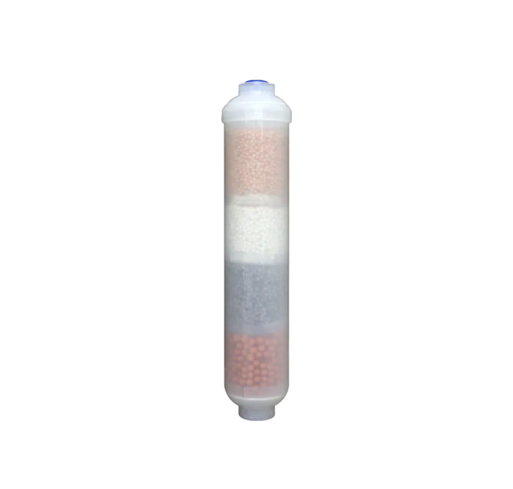

PP Melt Blown Sediment Filter Cartridge
PP Melt Blown Sediment Filter Cartridge — Length: 10 inch, 20 inch, 30 inch, 40 inch on request.
Send Inquiry
CTO Coconut Shell Carbon Block Filter is a carbon filter cartridge positioned as a CTO carbon block filter for purifier, dispenser and prefilter programs. Selection should confirm coconut shell activated carbon media, micron rating, cartridge size, pressure drop, housing fit and replacement-set packaging. Key specifications include Media: Coconut shell activated carbon block; Micron Rating: 1, 5 or 10 micron.
CTO Coconut Shell Carbon Block Filter is a carbon filter cartridge normally compared by carbon media grade, adsorption target, micron rating, cartridge length, cap style and housing fit. For private label water filter cartridge programs, the useful quotation details are wrapper design, replacement-set mix, carton language and pallet packing.
For CTO Coconut Shell Carbon Block Filter, carbon cartridge content should focus on media, compression, contact time, pressure drop, compatible housings and where the cartridge sits in the filtration sequence. This gives buyers clearer selection criteria than repeating wholesale or factory wording.
| Media | Coconut shell activated carbon block |
|---|---|
| Micron Rating | 1, 5 or 10 micron |
| Length | 10 inch / 20 inch / custom |
| Function | Chlorine, taste, odor and organic compound reduction |
| Compatibility | RO systems, countertop filters, whole house housings |
| OEM/ODM | Formula, label, end cap, color and packaging |
PP Melt Blown Sediment Filter Cartridge — Length: 10 inch, 20 inch, 30 inch, 40 inch on request.
Send Inquiry
Flat-End UDF Coconut-Shell Granular Activated Carbon Filter Cartridge – Blue End Caps — Visible configuration: Blue End Caps.
Send Inquiry
The Female-Threaded T33 Coconut-Shell Activated Carbon Filter Cartridge uses a female-threaded inline cartridge. It uses Coconut-shell activated carbon.
Send Inquiry
RO Membrane Element — Function: TDS, salts and heavy metal reduction.
Send InquirySend quantity, target market, configuration notes and packaging requirements. Specific reduction claims require matching documentation for the proposed sample and operating conditions.